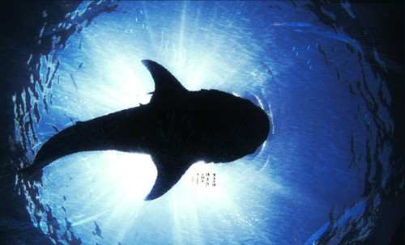
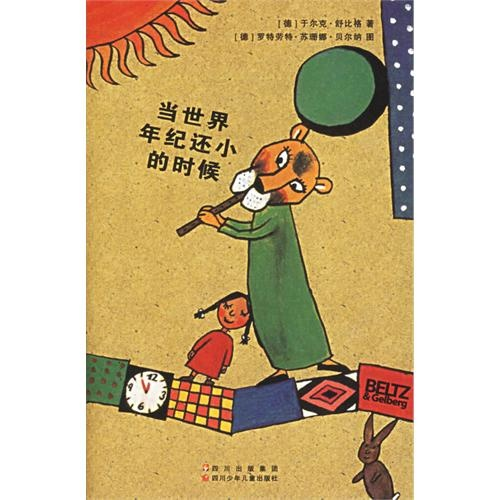

我们都被忘了
这首歌的原版是香港歌手谢安琪演唱的歌曲《我们都被忘了》。沃特艾文儿重新填词后，这首《化身孤岛的鲸》诞生了，从而有了一种完全不同的风格。细腻优美的歌词配上婉转的曲调，让人联想到动画大师宫崎骏的作品中所包含的温柔治愈的感觉。 歌词到底讲述了一个什么样的故事呢？我从网上找到沃特艾文儿的回答是：“听客听的都是自己的心情，你听到它时想到的那个故事就是它的故事。而不是别的故事。” 是啊，一千个人眼里就有一千个哈姆雷特。为了找到自己的哈姆雷特，我去听了《我们都被忘了》，歌词里出现的“下雨”“乌云”“寂寞”表达的就是恋人间的悲伤感情故事。回来再听《化身孤岛的鲸》，感觉完全不一样。
午时风的故事
一个女孩遭遇海难，衣衫破旧的她在大洋正中意外地与一只蓝鲸相遇。蓝鲸是世界上已知的最庞大的生物，它的背脊是孤岛，是荒丘，是女孩的栖息地。女孩为它唱歌，随它流浪，抚摸它的疮口，陪伴它度过一个又一个日夜。 她的到来，打破了它原本甘之如饴的寂寞。原来歌声是如此动人，他人的陪伴是如此幸福，它欢喜地想要跳跃，想要给她更宽厚的肩头和能奔跑的岸头，让她能像王后般得到所想要的。 因为她是它的一切。所以她的眼眸比地中海的蓝天还要清澈，比西伯利亚的雪景还要纯洁，胜过它见过的所有山川河流。 歌声，问候，抚摸，陪伴。这些体验，都是它生命中的第一次。在这个冰天雪地里，它的心情第一次那样滚烫与炙热。
 可以把这个故事当成单纯的一个属于人和鲸的美好故事，不添加多余的逻辑和意象，因为这个故事太美丽，太纯洁。就让鲸鱼和女孩漂流到天涯海角不好吗？当世界年纪还小的时候
这让我想起一本书——《当世界年纪还小的时候》。作者是于尔克•舒比格，德国作家。有些书要坐的端端正正的读，才品的出味道来，这本书，你可以很随意，从哪一则读起都无妨，因为当世界还小的时候，事物没有太多既定的框框，心很柔软。 里面有一篇关于鲸鱼的故事，感兴趣的可以点这里找到这个故事。
Photographs by online searching.